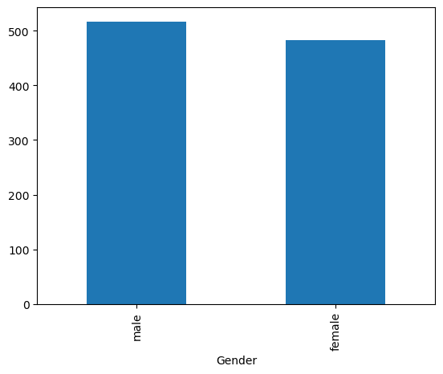
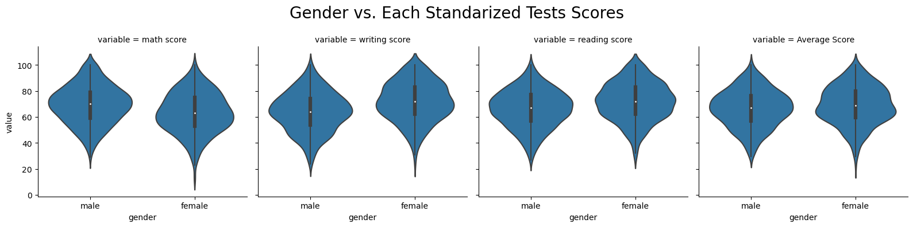
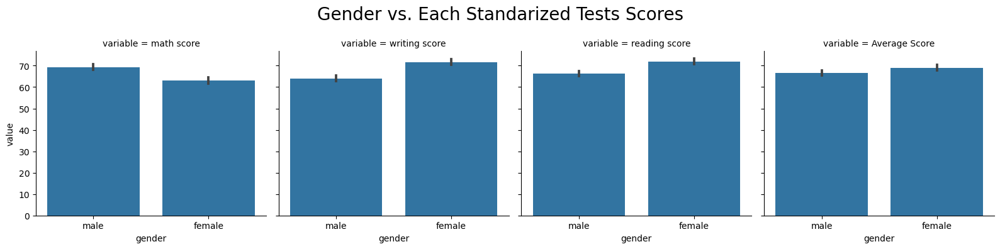

Overview
In this project, Tina, Noah, and Peter each explored a dataset called Student Performance in Exams. Each of us explored different socioeconomic factors which may or may not impact student performance on standarized tests. As students studying at UBC- a university with many international students-
we wanted to emphasize and acknowledge that different socio-economical backgrounds are important factors to consider when it comes to college admissions. Ultimately, based on our findings, we criticized the legitamcy behind standarized tests.
Objective
In my analysis, I investigated whether or not one sex performs better on standardized exams than the other. I simplified the data to only use the following columns: "gender", "writing scores","reading scores", and "math scores".
With these columns, I dropped any NA values and only worked with scores in the range [0,100]. With these changes, I used barplots, violin plots, and compound plots to visualize my data.
With these values and columns I hope to answer the following research question:
Does one sex perform better on standarized exams than the other?
Research
Before doing any analysis at all, I hypothesized that females perform better than males in standardized tests. As a female university student, I was interested to see if one sex does better on standardized tests because I have always been told that “guys are smarter than girls”. In efforts to debunk this myth and see if females do better on certain subjects, I explore my research questions through 3 visualizations. These research interests are important to explore because females often struggle with expressing their intelligence and expertise. Therefore, I hope my data analysis helps females feel empowered to express their intelligience.
To start off, I check if my data analysis is valid or not by checking the number of males and females in the “gender” column.

*By having relatively equal sample sizes for each gender, it increases statistical power and validates the data set more. I was able to move on with my data analysis since I was confident with the given data.
After that, I wanted to compare the averages of each subject ("math", "reading", and "writing") to each sex to understand which sex does better in what subject using 4 violin plots.

*Based on the visualization above, I found out that females do better in writing and reading, and males do better in math. When comparing the total score average of all 3 subjects, females did 2.36% better.

*Based on the visualization above, more females seem to be getting scores closer to 100% in comparison to males. The only outlier would be in math. Math is the only subject where more females are getting scores less than 20%.
Looking at the mean scores of each gender in EWR, females tend to perform better by about 5% (531 vs 526 respectively). This supports my analysis because in this data set, females perform better in reading and writing in comparison to me. In math, males perform better by about 18%. This supports my findings because math is the only subject where males do better. Further analysis should be done to understand why females only perform better in reading and writing. However, looking at the total mean score of each gender, males score 13 points higher. This was interesting data to find because it opposes my conclusions from our data set. Additionally, it was interesting to see that individuals who didn't response or put "another" gender received the highest mark amongst the 3 given genders. Ultimately, my juxtaposing conclusions shows the dangers in stereotyping either sex and can't fully support my original conclusion that females tend to do better on standardized tests than males.
Conclusion
After conducting individual analysis on the effects of parental level of education, gender, and race, we all came to the conclusion that there are many socio-economic factors that impact student performance on standardized tests. In fact, our findings highlight how unconventional standardized tests, and schools should not use them as a way to measure intelligence.